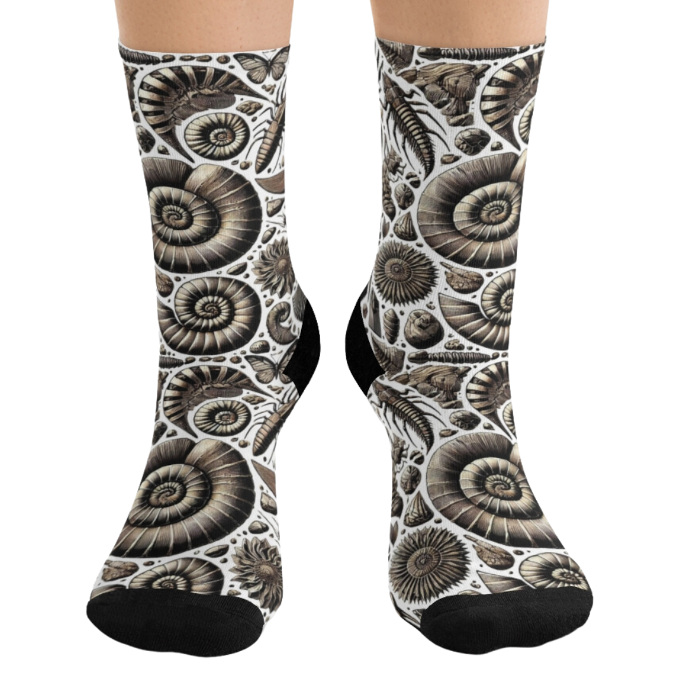
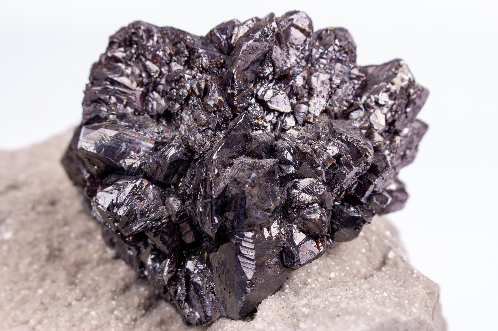

New here?

New to rockhounding and don't know where to start? Not to worry, we will show you the ropes. Click below to head over to our "Getting Started" guide
Getting StartedRocks & Minerals In Ohio


Ohio rockhounding maps to hunt for crystals, gemstones, minerals, and ores. Ohio is a treasure trove for rockhounds, with its diverse geology providing opportunities for fossil hunting, mineral collecting, and more. From the famous trilobite fossils of the Cincinnati region to the colorful Flint Ridge flint, Ohio offers a wide range of geological wonders to discover.
Shop Our Merch!
We have tons of cool t-shirts, hats, water bottles, and stickers. Show off your love for rockhounding with our high-quality merchandise.
Visit StorePlease always bring appropriate attire and do research before venturing out to rock hunt and crystal hunt. Also, be sure to verify that the location you want to hunt at is available for public access. Rockhounding.org does our best to verify, but it is your responsibility to verify as well because sometimes things change. We are not liable for any actions you take from the information you find on this site.
Snacks & Hydration

Energy Bars
Stay energized with the best energy bars for your rockhounding adventures.
Our Favorites

Must Have Rockhounding Tools


Keeping accurate records of Rockhounding & Gemstone Hunting Locations is a community effort! Know of a good spot that is missing from our maps? Feel free to submit it below. Thank you for your contributions to the rockhounding community!
Popular Rocks, Crystals, & Gemstones In Ohio
-
 Flint
FlintFlint can be found in Ohio, especially in the eastern and southern parts of the state, in areas like Flint Ridge State Memorial.
Read More -
 Trilobite
TrilobiteTrilobite fossils are common in Ohio, particularly in limestone and shale formations throughout the state.
Read More -
 Celestite
CelestiteCelestite can be found in Ohio, particularly in the northwestern part of the state, in areas like the Lime City Quarry.
Read More -
 Obsidian
ObsidianObsidian can be found in Ohio, especially in the southern and eastern parts of the state where ancient volcanic activity occurred.
Read More -
 Calcite
CalciteCalcite can be found in Ohio, particularly in areas with limestone and dolomite formations, such as quarries and caves.
Read More -
Green Quartz
Green quartz, also known as prasiolite, can be found in Ohio, especially in the southeastern part of the state.
Read More -
 Brachiopod
BrachiopodBrachiopod fossils can be found in Ohio, particularly in limestone and shale formations throughout the state.
Read More -
 Crinoid
CrinoidCrinoid fossils can be found in Ohio, especially in limestone formations throughout the state.
Read More -

Sphalerite
Sphalerite can be found in Ohio, particularly in the southeastern part of the state, in areas with zinc deposits.
Read More -
 Gypsum
GypsumGypsum can be found in Ohio, particularly in the northwestern part of the state, where it forms in evaporite deposits.
Read More -
 Fluorite
FluoriteFluorite can be found in Ohio, especially in the southern part of the state, in areas with hydrothermal veins and deposits.
Read More -
 Hematite
HematiteHematite can be found in Ohio, particularly in the southeastern part of the state, in areas with iron ore deposits.
Read More
Popular Rock Hunting Areas In Ohio
-
 Flint Ridge State Memorial
Flint Ridge State MemorialFlint Ridge State Memorial, located in Licking County, is a site where Native Americans once mined flint for tools and weapons. Today, visitors can collect colorful and high-quality Flint Ridge flint in designated areas of the park.
Read More -
 Caesar Creek State Park
Caesar Creek State ParkCaesar Creek State Park, in southwestern Ohio, is a prime location for fossil hunting. The park's spillway, created by the U.S. Army Corps of Engineers, exposes Ordovician fossil beds where visitors can find trilobites, brachiopods, and other ancient marine fossils.
Read More -
 Seneca Caverns
Seneca CavernsSeneca Caverns, located in Bellevue, offers visitors an opportunity to explore an underground wonderland of mineral formations. The guided tours showcase a variety of cave formations, including flowstone, stalactites, and stalagmites.
Read More -
 Trammel Fossil Park
Trammel Fossil ParkTrammel Fossil Park, located in Sharonville, is a unique destination dedicated to fossil hunting. Visitors can search for fossils from the Ordovician Period, including brachiopods, bryozoans, and cephalopods, in this accessible and family-friendly park.
Read More -
 Ohio Caverns
Ohio CavernsOhio Caverns, located in West Liberty, is a beautiful underground site featuring a variety of mineral formations. Visitors can take guided tours to see the colorful stalactites, stalagmites, and helictites that decorate the cave's chambers.
Read More -
 Fossil Park
Fossil ParkFossil Park, located in Sylvania, is a 5-acre park where visitors can search for fossils from the Devonian Period. The park is filled with fossil-rich rock, offering the opportunity to discover trilobites, brachiopods, and more.
Read More -
 Crystal Cave
Crystal CaveCrystal Cave, located on South Bass Island, is home to the world's largest geode. The cave is filled with stunning celestine crystals, and visitors can take guided tours to marvel at these impressive formations up close.
Read More -
 Perry's Cave Family Fun Center
Perry's Cave Family Fun CenterPerry's Cave Family Fun Center, located on South Bass Island, offers a variety of attractions for rockhounds and adventurers alike. In addition to the historic Perry's Cave, visitors can mine for gemstones at the Gemstone Mining Sluice. While not a traditional rockhounding experience, this does offer a way to introduce young children to rockhounding.
Read More -
 Hocking Hills Gem Mine
Hocking Hills Gem MineHocking Hills Gem Mine, located in Logan, allows visitors to pan for a variety of gemstones, minerals, and fossils in a fun and educational environment. Perfect for families and rockhounds of all ages, this destination offers a memorable experience for all. While not a traditional rockhounding experience, this does offer a way to introduce young children to rockhounding.
Read More -
 Indian Mound Rock & Mineral Club
Indian Mound Rock & Mineral ClubIndian Mound Rock & Mineral Club, based in Heath, is an organization for rockhounds in Ohio to learn about and collect rocks, minerals, and fossils. The club organizes field trips, educational events, and workshops to help enthusiasts expand their knowledge and collections.
Read More
Geology of Ohio
Ohio's geology consists primarily of sedimentary rocks, including limestone, shale, and sandstone, which were formed during the Paleozoic Era. The state's landscape was shaped by glaciation during the Pleistocene Epoch, resulting in its rich, fertile soils and diverse topography.
Ohio is known for its abundant fossil deposits, particularly in the Cincinnati region, where well-preserved trilobites, brachiopods, and other marine organisms can be found in the Ordovician-age rocks. The state is also home to Flint Ridge, a unique geological formation containing colorful flint that was highly prized by Native Americans for toolmaking.
Ohio's diverse geology offers a wealth of rockhounding opportunities, from fossil hunting in the Cincinnati region to exploring the mineral deposits and unique geological features throughout the state.